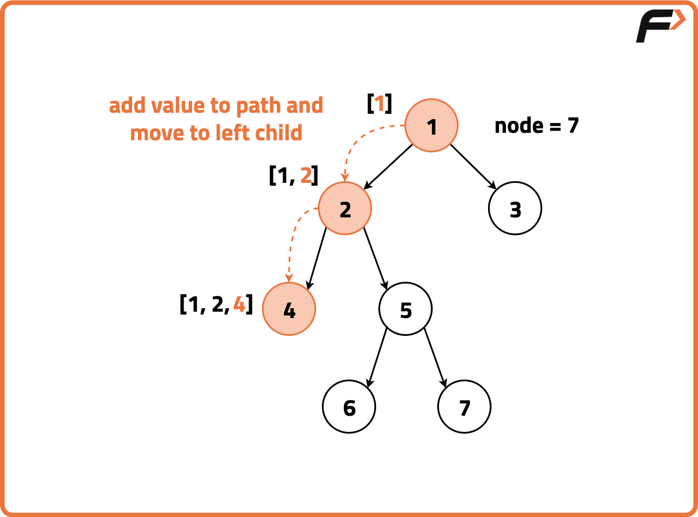
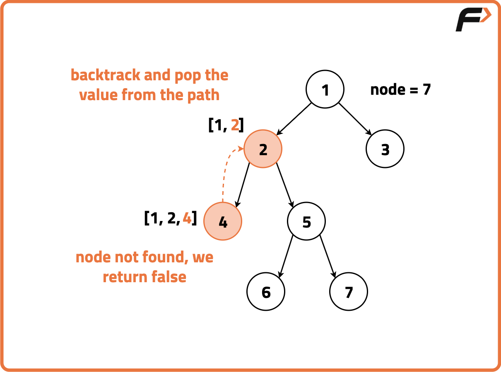
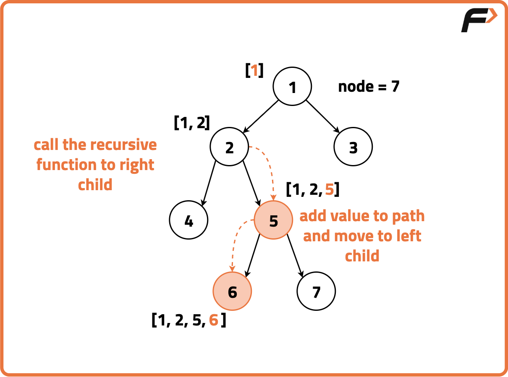
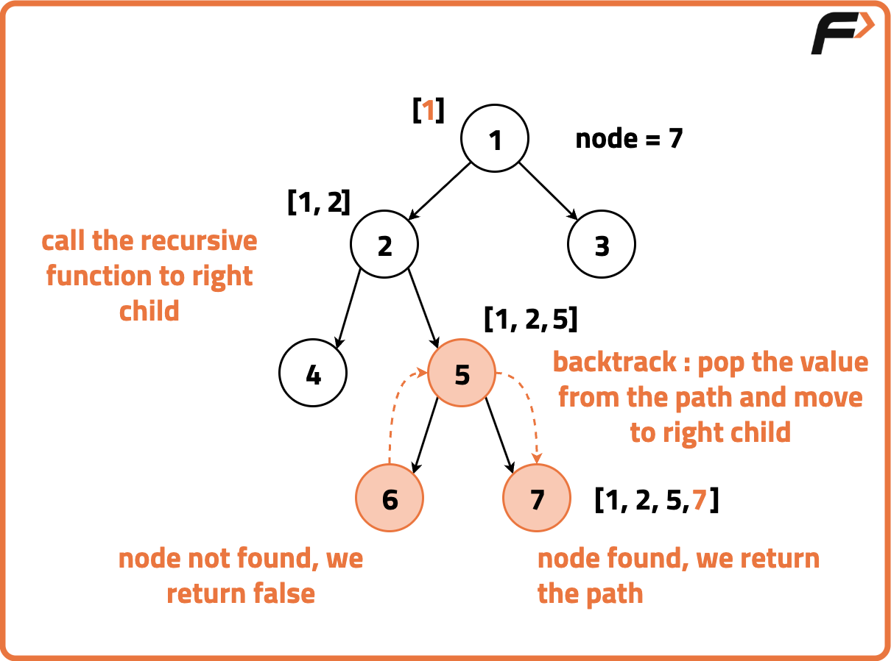
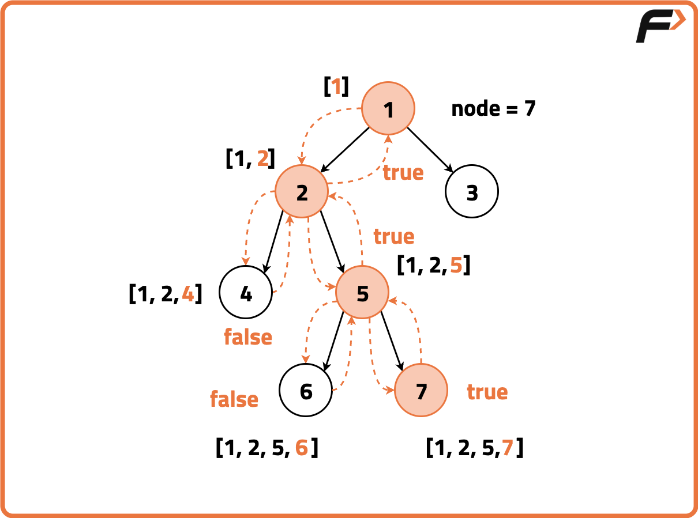

Archived from https://takeuforward.org/data-structure/print-root-to-node-path-in-a-binary-tree/
Problem Statement: Given a Binary Tree and a reference to a root belonging to it. Return the path from the root node to the given leaf node. Note: No two nodes in the tree have the same data value and it is assured that the given node is present and a path always exists.
Disclaimer:
Here is the practice link to help you assess your knowledge better.
It's highly recommend trying to
solve it before looking at the solution.
Approach
Algorithm
To find the path from the root to the given node in the tree we use a Depth-First Traversal. We initialise a vector to store the current path and recursively travel to each node in the tree. At each step, we check if the current node is null, if it is we return false and if the data value of the current node is equal to the given node, we return true signifying the end of the traversal search.
During the recursive calls, we append the current node’s data value to the vector and explore the left and right children. We backtrack if the target value is not found as the children return ‘false’ and remove the last node from the path vector. In the end, we return the vector containing the path from the root to the given node.
Start a recursive DFS traversal from the root node. Maintain a list (or vector) that keeps track of the current path from the root to the current node during traversal.
At each node, add its value to the current path list. Then, check if this node is the target leaf node by verifying both that it's a leaf (no left or right child) and that its value matches the given target.
If the current node is not the target leaf, recursively search in the left and right subtrees. If either recursive call returns true, it means the target leaf is found through that path, so continue returning true.
If the leaf is not found in either subtree, backtrack by removing the current node from the path list before returning false, ensuring the path list only contains valid nodes on the path to the leaf.





Code
#include <bits/stdc++.h>
using namespace std;
// Structure for a binary tree node
struct TreeNode {
// Value of the node
int val;
// Pointers to left and right children
TreeNode* left;
TreeNode* right;
// Constructor to initialize the node
TreeNode(int x) : val(x), left(nullptr), right(nullptr) {}
};
// Class containing the solution
class Solution {
public:
// Function to find the path from root to node with value x
bool getPath(TreeNode* root, vector<int>& arr, int x) {
// If current node is NULL, return false
if (!root) {
return false;
}
// Add current node's value to the path
arr.push_back(root->val);
// If current node's value is equal to x, return true
if (root->val == x) {
return true;
}
// Recursively search in left or right subtree
if (getPath(root->left, arr, x) ||
getPath(root->right, arr, x)) {
return true;
}
// If not found, backtrack and remove current node
arr.pop_back();
return false;
}
// Function to get the path from root to node with value B
vector<int> solve(TreeNode* A, int B) {
// Vector to store the path
vector<int> arr;
// If root is NULL, return empty path
if (A == NULL) {
return arr;
}
// Call helper function to fill the path
getPath(A, arr, B);
// Return the resulting path
return arr;
}
};
// Main function to run the code
int main() {
// Creating the binary tree
TreeNode* root = new TreeNode(3);
root->left = new TreeNode(5);
root->right = new TreeNode(1);
root->left->left = new TreeNode(6);
root->left->right = new TreeNode(2);
root->right->left = new TreeNode(0);
root->right->right = new TreeNode(8);
root->left->right->left = new TreeNode(7);
root->left->right->right = new TreeNode(4);
// Create an instance of the solution class
Solution sol;
// Value of the target node
int targetLeafValue = 7;
// Get the path from root to the target node
vector<int> path = sol.solve(root, targetLeafValue);
// Print the path
cout << "Path from root to node with value ";
cout << targetLeafValue << ": ";
for (int i = 0; i < path.size(); ++i) {
cout << path[i];
if (i < path.size() - 1) {
cout << " -> ";
}
}
return 0;
}
import java.util.*;
// TreeNode class for Binary Tree
class TreeNode {
int val;
TreeNode left, right;
// Constructor to initialize the node
TreeNode(int x) {
val = x;
left = right = null;
}
}
class Solution {
// Function to get path from root to node with value x
public boolean getPath(TreeNode root, List<Integer> arr, int x) {
// Base case: If node is null
if (root == null)
return false;
// Add current node to path
arr.add(root.val);
// If current node is the target
if (root.val == x)
return true;
// Recurse into left and right children
if (getPath(root.left, arr, x) || getPath(root.right, arr, x))
return true;
// Backtrack if not found
arr.remove(arr.size() - 1);
return false;
}
// Function to return the final path vector
public List<Integer> solve(TreeNode root, int x) {
// Initialize result list
List<Integer> arr = new ArrayList<>();
// If tree is empty
if (root == null)
return arr;
// Call helper function
getPath(root, arr, x);
return arr;
}
}
public class Main {
public static void main(String[] args) {
// Construct the tree
TreeNode root = new TreeNode(3);
root.left = new TreeNode(5);
root.right = new TreeNode(1);
root.left.left = new TreeNode(6);
root.left.right = new TreeNode(2);
root.right.left = new TreeNode(0);
root.right.right = new TreeNode(8);
root.left.right.left = new TreeNode(7);
root.left.right.right = new TreeNode(4);
// Create solution object
Solution sol = new Solution();
// Target node value
int target = 7;
// Get path from root to target
List<Integer> path = sol.solve(root, target);
// Print the path
System.out.print("Path from root to node " + target + ": ");
for (int i = 0; i < path.size(); i++) {
System.out.print(path.get(i));
if (i < path.size() - 1)
System.out.print(" -> ");
}
}
}
# TreeNode class for Binary Tree
class TreeNode:
def __init__(self, val):
# Initialize node with value
self.val = val
self.left = None
self.right = None
class Solution:
# Function to find the path from root to a given node
def getPath(self, root, arr, x):
# Base case: If root is None
if root is None:
return False
# Add current node to path
arr.append(root.val)
# If current node is the target
if root.val == x:
return True
# Recurse on left and right
if self.getPath(root.left, arr, x) or self.getPath(root.right, arr, x):
return True
# Backtrack if not found
arr.pop()
return False
# Function to return the final path list
def solve(self, root, x):
# Initialize result path
arr = []
# If tree is empty
if root is None:
return arr
# Get path using helper
self.getPath(root, arr, x)
return arr
# Main driver function
def main():
# Construct the tree
root = TreeNode(3)
root.left = TreeNode(5)
root.right = TreeNode(1)
root.left.left = TreeNode(6)
root.left.right = TreeNode(2)
root.right.left = TreeNode(0)
root.right.right = TreeNode(8)
root.left.right.left = TreeNode(7)
root.left.right.right = TreeNode(4)
# Create solution object
sol = Solution()
# Target node value
target = 7
# Get path
path = sol.solve(root, target)
# Print result
print(f"Path from root to node {target}:", end=" ")
for i in range(len(path)):
print(path[i], end="")
if i < len(path) - 1:
print(" -> ", end="")
main()
// TreeNode class for Binary Tree
class TreeNode {
constructor(val) {
// Initialize node with value
this.val = val;
this.left = null;
this.right = null;
}
}
class Solution {
// Function to find path from root to node with value x
getPath(root, arr, x) {
// Base case: If root is null
if (!root) return false;
// Push current node to path
arr.push(root.val);
// If current node is the target
if (root.val === x) return true;
// Recurse on left and right subtrees
if (this.getPath(root.left, arr, x) || this.getPath(root.right, arr, x)) {
return true;
}
// Backtrack if not found
arr.pop();
return false;
}
// Function to return path from root to target node
solve(root, x) {
// Initialize result array
const arr = [];
// If tree is empty
if (!root) return arr;
// Get path using helper
this.getPath(root, arr, x);
return arr;
}
}
// Driver code
function main() {
// Build the tree
const root = new TreeNode(3);
root.left = new TreeNode(5);
root.right = new TreeNode(1);
root.left.left = new TreeNode(6);
root.left.right = new TreeNode(2);
root.right.left = new TreeNode(0);
root.right.right = new TreeNode(8);
root.left.right.left = new TreeNode(7);
root.left.right.right = new TreeNode(4);
// Create solution object
const sol = new Solution();
// Target node value
const target = 7;
// Get the path
const path = sol.solve(root, target);
// Print the path
let output = `Path from root to node ${target}: `;
for (let i = 0; i < path.length; i++) {
output += path[i];
if (i < path.length - 1) output += " -> ";
}
console.log(output);
}
main();
Complexity Analysis.
Time Complexity: O(N), where N is the number of nodes in the binary tree as each node of the binary tree is visited exactly once in the inorder traversal. Space Complexity: O(N), additional stack space used for recursion and space for storing the path.